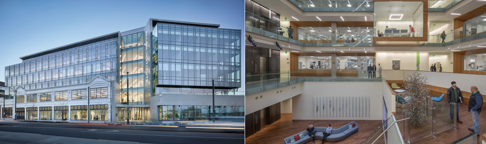
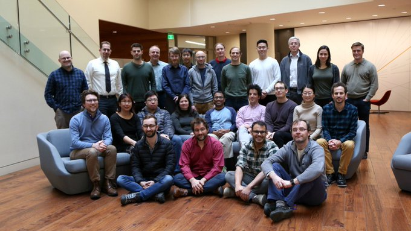

Welcome to the web page for the 7th NWB Hackathon!
Table of Contents
Dates and Location
Logistics
-
Hotel: The Allen Institute has organized a special rate at the Staybridge Suites, just 3 blocks from the institute. If you did not reserve your room at the Staybridge Suites before January 3, the cutoff date for the hotel block, you may still be able to make a reservation with the hotel at the usual rate. Other nearby hotels include the Even Hotel, Courtyard Mariott Downtown/South Lake Union, and Residence Inn South Lake Union.
-
Transportation: Please use public transportation or park at a local garage. There will be no parking permits. Additional details on getting to the Allen Institute are available here.
-
Food: Lunch is provided at the Allen Institute. Breakfast and dinner are on your own. See here for a suggestions for breakfast and dinner locations.
Organizing Committee
-
Site Chair: Lydia Ng and Pam Baker (Allen Institute for Brain Science)
-
Program Chair: Oliver Ruebel (Lawrence Berkeley National Laboratory)
Additional Organizational Support
- The Kavli Foundation
- Allen Institute for Brain Science
Attendees

- Ng, Lydia (@lydiang) - Allen Institute For Brain Science - lydian@alleninstitute.org
- Ruebel, Oliver (@oruebel) - Lawrence Berkeley National Laboratory - oruebel@lbl.gov
- Shan Shen - DataJoint Neuro
- Ryan Ly -Lawrence Berkeley National Laboratory
- Josh Siegle - Allen Institute For Brain Science
- Eric Denovellis -UCSF
- Csaba - Földy University of Zurich
- Thomas Braun - byte physics e.K.
- Shreejoy Tripathy - University of Toronto
- Colleen Gillon - University of Toronto
- Liviu S. - Laboratory of Neural Microcircuitry, EPFL / Blue Brain Project, EPFL
- Ben Dichter - Ben Dichter Consulting LLC
- Andrew Tritt - Lawrence Berkeley National Laboratory
- Matt McCormick - Kitware, Inc
- Jean-Christophe Fillion-Robin - Kitware
- Will Mayner - Center for Sleep and Consciousness, University of Wisconsin–Madison
- Michael Grauer - Kitware, Inc.
- Yaroslav Halchenko - Dartmouth College
- Ariel Rokem - The University of Washington
- Satrajit Ghosh - MIT
- Jerome Lecoq - Allen Institute For Brain Science
- Lawrence Niu - Vidrio Technologies LLC
- Pamela Baker - Allen Institute For Brain Science
- Bruce Kimmel - Vidrio Technologies
- Carol Thompson - Allen Institute For Brain Science
- Jim Berg - Allen Institute For Brain Science
- Pavel Kulik - Allen Institute For Brain Science
- Young Seok Seo - University of Toronto
- Sergey Gratiy - Allen Institute For Brain Science
- Scott Daniel - Allen Institute For Brain Science
Agenda
-
01/07/2020 at 10am, PT: Preparatory video conference
-
Monday, Feb. 3: Arrive in Seattle in the morning. Program to start at noon.
-
11:30am-12:00pm: Arrive at Allen Institute
-
noon - 1:00pm: Lunch
-
1:00pm - 2:00pm: Welcome to the hackathon; Day 1 SCRUM, introductions, Overview of projects and plans for Day 1. (View Slides)
-
2:00pm - 6:00pm: Project work time
-
3:00pm - 4:00pm: Breakout on Validation and Introspection - Boardroom
-
4:15pm - 5:15pm Breakout on NWB and DataJoint - Boardroom
-
6:00pm Dinner on own
-
Tuesday, Feb. 4: Work on projects. Full day.
-
9:00 - 9:20am: Day 2 SCRUM, Review progress made and plans for Day 2
-
9:20 - noon: Project work time
-
9:30 - 10:30am: Breakout on NWB via the web - Boardroom
-
11:50am - noon: Group Photo
-
noon - 1:00pm: Lunch break
-
12:45-1:15pm: Optional tour of the Allen Institute (meet at cafe)
-
1:00 - 6:00pm: Project work time
-
2:00 - 3:00pm: Breakout on Intracellular Ephys (Extension Proposal and Beyond) - Library
-
6:00pm Dinner on own
-
Wednesday, Feb. 5 Work on projects. Full day. Program to end by 6pm.
-
9:00 - 9:20am: Day 3 SCRUM, Review progress made and plans for Day 3
-
9:20 - noon: Project work time
-
9:30am - 10:30: Breakout on Visualization for NWB - Library
-
11:00 - noon: Breakout on Ontology and Provenance - Boardroom
-
noon - 1:00pm: Lunch break
-
1:00 - 3:30pm: Project work time
-
3:30 - 4:30pm: Closing discussion (review of the hackathon, overview of progress, future plans etc.)
-
4:30 - 6:00pm: Hacking on projects and conclusion of the developer portion of the hackathon.
-
6:00pm Dinner on own. Hacking participants depart.
-
Thursday, Feb. 6 Reserved for NWB board meetings
-
9:00 - 9:30am Set agenda for the day. Topics include: (i) planning for and working on upcoming proposals
(ii) NWB project planning, (iii) discussion of rules and guidelines, (iv) review of outcomes from the hackathon etc.
-
9:30 - noon Board meetings and group discussion
-
noon - 1pm Lunch
-
1:00 - 5:00pm Board meetings and group discussion
-
5:00 - 5:30pm Closing discussions
For further details please see the Allen Insititute’s events and training page
Projects
For instructions on how to create a project see here
Assigned Projects
The lists below provides an overview of specific projects for which at least one or more attendees have signed up for to contribute to. Projects are collaborative in nature. If you are attending the hackathon and are interested in participating in any of the existing projets then please contact the team listed on the project page and add your name to the list of participants for the project.
Breakout Sessions
The lists below provides an overview of planned breakout sessions during the hackathon. Breakout sessions are collaborative meetings
focused on topics of common interest. Each breakout session has an assigned session chair to help coordinate the meeting.
Proposing breakout sessions
To propose additional breakout sessions, please contact the hackathon organizing team.
Next Hackathon
In addition to this development-focused Hackathon, there will be additional NWB community events taking place in 2020, including an NWB tutorial prior to the Cosyne 2020 meeting in Denver on February 26 and the 8th NWB:N Developer and User Days Hackathon at HHMI Janelia from May 6-9. Several other events for 2020 are also currently in the planning process. For up-to-date information on upcoming events please see our NWB events page here.
Disclaimer
This website and related content were prepared as an account of or to expedite work sponsored at least in part by the United States Government. While we strive to provide correct information, neither the United States Government nor any agency thereof, nor The Regents of the University of California, nor the Allen Institute for Brain Science, nor any of their employees, makes any warranty, express or implied, or assumes any legal responsibility for the accuracy, completeness, or usefulness of any information, apparatus, product, or process disclosed, or represents that its use would not infringe privately owned rights.
Reference herein to any specific commercial product, process, business, or service by its trade name, trademark, manufacturer, or otherwise, does not necessarily constitute or imply its endorsement, recommendation, or favoring by the United States Government or any agency thereof, or The Regents of the University of California, or the Allen Insitiute for Brain Science. Use of the NWB, LBNL, Allen Institute, or University’s name for endorsements is prohibited.
The views and opinions of authors expressed herein do not necessarily state or reflect those of the United States Government or any agency thereof or The Regents of the University of California or the Allen Institute for Brain Science. Neither Berkeley Lab nor its employees are agents of the US Government. Berkeley Lab web pages link to many other websites. Such links do not constitute an endorsement of the content or company and we are not responsible for the content of such links.